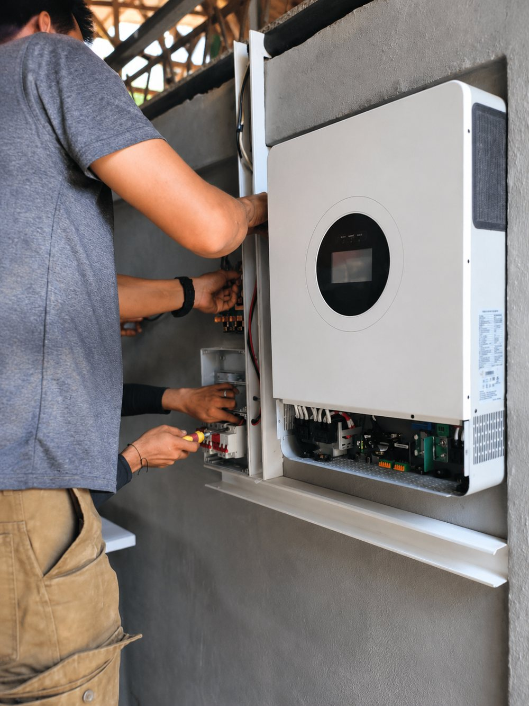
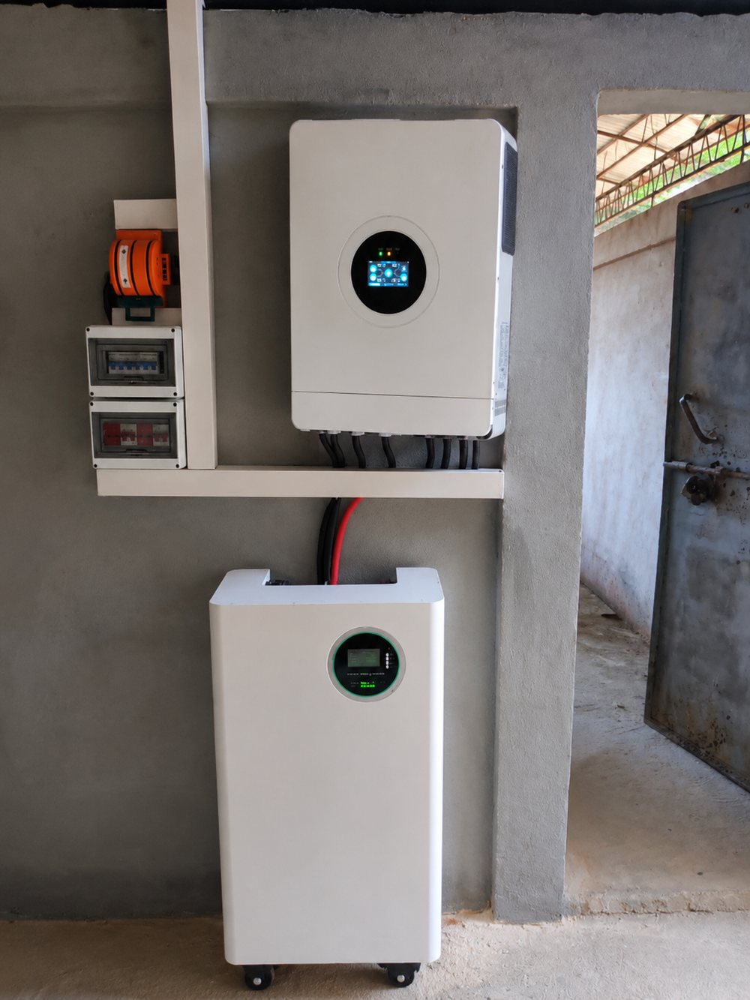

Solar Hope Network es una iniciativa a largo plazo diseñada para equipar a 100 iglesias ubicadas estratégicamente con sistemas de energía solar, transformándolas en centros sostenibles de compasión, servicio y esperanza para sus comunidades.
The Solar Hope Network is a long-term initiative designed to equip 100 strategically located churches with solar energy systems, transforming them into sustainable centers of compassion, service and hope for their communities.
Este proyecto no se trata simplemente de instalar paneles solares. Se trata de fortalecer iglesias que ya están sirviendo a familias vulnerables y capacitarlas para convertirse en fuentes confiables de apoyo durante uno de los mayores desafíos que enfrentan las comunidades hoy: la crisis energética.
This project is not simply about installing solar panels. It is about strengthening churches that are already serving vulnerable families and enabling them to become reliable sources of support during one of the greatest challenges communities face today: the energy crisis.
Porque una iglesia puede impactar una comunidad. Pero 100 iglesias pueden impactar un movimiento.
Because one church can impact a community. But 100 churches can impact a movement.
02 · Por Qué Importa
02 · Why It Matters
Cuando la oscuridad se convierte en una crisis humanitaria
When darkness becomes a humanitarian crisis
En comunidades vulnerables de hoy, millones de personas enfrentan uno de los desafíos energéticos más difíciles de la historia reciente.
In vulnerable communities today, millions of people face one of the most difficult energy challenges in recent history.
Los apagones prolongados se han convertido en una realidad diaria. Muchas comunidades pasan tres o más días consecutivos sin electricidad. Cuando finalmente vuelve la energía, las familias pueden tener acceso a electricidad solo por unas pocas horas antes de que comiencen nuevamente los apagones.
Prolonged blackouts have become a daily reality. Many communities go three or more consecutive days without electricity. When power finally returns, families may have access to electricity for only a few hours before the outages begin again.
Detrás de estas realidades hay historias verdaderas:
Behind these realities are true stories:
Imagina llegar a casa cada noche y encontrar oscuridad total. Sin luces. Sin saber cuándo volverá la electricidad. A veces, las familias pueden pasar días con poca o ninguna energía.
Imagine coming home every night to total darkness. No lights. No knowing when the electricity will return. Sometimes families can go days with little or no power.
Imagina no tener electricidad para cocinar una comida para tu familia. Algo tan sencillo como preparar la cena se convierte en una lucha diaria.
Imagine not having electricity to cook a meal for your family. Something as simple as preparing dinner becomes a daily struggle.
Imagina ser una madre soltera con un bebé recién nacido en medio de un calor extremo y no tener ventilador ni aire acondicionado. Sin alivio. Solo horas de calor intenso mientras intentas cuidar a tu bebé.
Imagine being a single mother with a newborn baby in extreme heat with no fan or air conditioning. No relief. Only hours of intense heat while trying to care for your baby.
Imagina estar enfermo y depender de la electricidad para mantenerte saludable, o incluso para mantenerte con vida. Imagina depender de una bomba médica eléctrica. Imagina tener insulina u otro medicamento que debe mantenerse refrigerado, pero no tener electricidad para mantenerlo frío. Para alguien en esta situación, un apagón no es simplemente una molestia: puede convertirse en una crisis médica.
Imagine being sick and depending on electricity to stay healthy, or even to stay alive. Imagine depending on an electric medical pump. Imagine having insulin or another medication that must be refrigerated, but having no electricity to keep it cold. For someone in this situation, a blackout is not simply an inconvenience: it can become a medical crisis.
Imagina ser una persona mayor y vivir durante días en la oscuridad y el calor extremo. Sin ventilador. Sin refrigeración confiable para los alimentos o medicamentos. Comunicación limitada. Para las personas mayores y vulnerables, perder la electricidad hace que una situación ya difícil sea aún más difícil.
Imagine being an older person living for days in darkness and extreme heat. No fan. No reliable refrigeration for food or medication. Limited communication. For the elderly and vulnerable, losing electricity makes an already difficult situation even harder.
03 · La Iglesia
03 · The Church
Ya es un faro de esperanza
Already a lighthouse of hope
En medio de estos desafíos, la iglesia local continúa siendo una de las fuentes de apoyo más sólidas dentro de las comunidades.
In the midst of these challenges, the local church continues to be one of the strongest sources of support within communities.
A través de Kingdom in Action Family, 35 iglesias ya están sirviendo a sus comunidades proporcionando asistencia alimentaria a familias necesitadas. Estas iglesias son más que edificios. Son lugares donde:
Through Kingdom in Action Family, 35 churches are already serving their communities by providing food assistance to families in need. These churches are more than buildings. They are places where:
Las familias reciben apoyo.Families receive support.
Los líderes son capacitados.Leaders are trained.
Las personas experimentan compasión.People experience compassion.
Las comunidades encuentran esperanza.Communities find hope.
Imagina si la iglesia que ya provee alimentos también pudiera proveer luz.
Imagine if the church that already provides food could also provide light.

La iglesia equipada con energía solar de pronto se convierte en un faro de esperanza.
The church equipped with solar energy suddenly becomes a lighthouse of hope.
Lo que cambia cuando hay energía
What changes when there is power
Hay electricidad para mantener refrigerados los alimentos y medicamentos.There is electricity to keep food and medicine refrigerated.
Hay energía para cargar teléfonos.There is power to charge phones.
Hay ventiladores para las familias que sufren el calor extremo.There are fans for families suffering extreme heat.
Hay electricidad para preparar y conservar comidas para las personas necesitadas.There is electricity to prepare and preserve meals for those in need.
Hay un lugar donde las personas mayores y vulnerables pueden encontrar ayuda.There is a place where the elderly and vulnerable can find help.
No estamos simplemente dando paneles solares a las iglesias.
We are not simply giving solar panels to churches.
Estamos dando luz a las comunidades.We are giving light to communities.
Estamos ayudando a conservar alimentos.We are helping preserve food.
Estamos ayudando a proteger medicamentos.We are helping protect medications.
Estamos ayudando a las familias a comunicarse.We are helping families communicate.
Estamos ayudando a las iglesias a alimentar a las personas.We are helping churches feed people.
Estamos convirtiendo iglesias locales en centros de esperanza en comunidades que viven en oscuridad.We are turning local churches into centers of hope in communities living in darkness.
La oportunidad no es simplemente proporcionar electricidad. La oportunidad es multiplicar el impacto que ya está ocurriendo a través de la iglesia local.
The opportunity is not simply to provide electricity. The opportunity is to multiply the impact already happening through the local church.
04 · La Solución
04 · The Solution
Cada iglesia equipada se convierte en un recurso
Every equipped church becomes a resource
Solar Hope Network equipará iglesias con sistemas de energía solar, transformándolas en Faros de Esperanza. Cada iglesia equipada se convertirá en un recurso para la comunidad que proporcionará:
Solar Hope Network will equip churches with solar energy systems, transforming them into Lighthouses of Hope. Each equipped church will become a community resource providing:
Estaciones para cargar teléfonos celulares.Charging stations for mobile phones.
Apoyo para madres con bebés y familias vulnerables.Support for mothers with babies and vulnerable families.
Iluminación durante apagones prolongados.Lighting during prolonged blackouts.
Espacios seguros durante tiempos de crisis.Safe spaces during times of crisis.
Continuidad de programas humanitarios.Continuity of humanitarian programs.
Capacitación de líderes y educación.Leader training and education.
Servicios de adoración y discipulado sin interrupciones.Uninterrupted worship services and discipleship.
Un lugar confiable de apoyo cuando las comunidades más lo necesiten.A reliable place of support when communities need it most.
Este proyecto no se trata solo de energía. Se trata de dignidad, conexión, seguridad y esperanza.
This project is not only about energy. It is about dignity, connection, safety and hope.
05 · 100 Faros de Esperanza
05 · 100 Lighthouses of Hope
Un enfoque estratégico de tres fases
A strategic three-phase approach
El objetivo es establecer 100 Faros de Esperanza mediante un enfoque estratégico de tres fases. Esta iniciativa a largo plazo crecerá de manera responsable, permitiendo excelencia en la implementación, la rendición de cuentas y la sostenibilidad.
The goal is to establish 100 Lighthouses of Hope through a strategic three-phase approach. This long-term initiative will grow responsibly, allowing for excellence in implementation, accountability and sustainability.
Fase 1
Phase 1
Estableciendo los primeros 40 faros
Establishing the first 40 lighthouses
IglesiasChurches40 × $7.500
InversiónInvestment$300.000
ImpactoImpact4.000 familias
Costo por familiaCost per family$75
Fase 2
Phase 2
Expandiendo la red (+40 iglesias)
Expanding the network (+40 churches)
IglesiasChurches40 × $7.500
InversiónInvestment$300.000
ImpactoImpact+4.000 familias
AcumuladoCumulative8.000 familias
Fase 3
Phase 3
Completando la visión (+20 iglesias)
Completing the vision (+20 churches)
IglesiasChurches20 × $7.500
InversiónInvestment$150.000
ImpactoImpact+2.000 familias
AcumuladoCumulative10.000 familias
06 · Visión Completa del Proyecto
06 · Full Project Vision
Inversión total e impacto total
Total investment and total impact
$750.000
Inversión total del proyecto
Total project investment
0
Iglesias equipadas
Churches equipped
0
Familias impactadas directamente
Families directly impacted
Solar Hope Network crea un impacto medible. Cada Faro representa una iglesia equipada: una inversión de $7.500 que atiende a 100 familias, es decir $75 por familia.
Solar Hope Network creates measurable impact. Each Lighthouse represents one equipped church: a $7,500 investment serving 100 families, that is $75 per family.
Cada $75 invertidos representan una familia que obtiene acceso a una fuente sostenible de apoyo, conexión y esperanza durante tiempos de crisis.
Every $75 invested represents one family that gains access to a sustainable source of support, connection and hope during times of crisis.
07 · Una Iglesia Equipada
07 · An Equipped Church
Una inversión sostenible a largo plazo
A sustainable long-term investment
$7.500
Invertidos por iglesia.
Invested per church.
100
Familias atendidas diariamente.
Families served daily.
$75
Costo total por familia.
Total cost per family.
Solar Hope Network no es un proyecto de ayuda temporal. Es una inversión a largo plazo. Cada sistema solar continuará produciendo energía durante años, reduciendo la dependencia de sistemas eléctricos inestables y permitiendo que las iglesias amplíen su capacidad de servir.
Solar Hope Network is not a temporary relief project. It is a long-term investment. Each solar system will continue producing energy for years, reducing dependence on unstable electrical systems and allowing churches to expand their capacity to serve.
En lugar de responder continuamente a emergencias, estamos creando centros permanentes de compasión, servicio y transformación.
Instead of continually responding to emergencies, we are creating permanent centers of compassion, service and transformation.
Cada iglesia equipada se convierte en un recurso duradero para toda su comunidad.
Each equipped church becomes a lasting resource for its entire community.
Paneles instaladosPanels installedPuesta en marchaCommissioning

Inversor y bateríasInverter and batteries
08 · Oportunidades de Colaboración
08 · Partnership Opportunities
Elige el nivel que puedas sostener
Choose the level you can sustain
$75
Colaborador Solar
Solar Partner
Patrocina 1 familia. Ayuda a equipar 1 iglesia.
Sponsors 1 family. Helps equip 1 church.
$1.500
Constructor de Energía
Energy Builder
Patrocina 20 familias. Ayuda a equipar 1 iglesia.
Sponsors 20 families. Helps equip 1 church.
$7.500
Constructor de Faros
Lighthouse Builder
Equipa 1 Faro de Esperanza. Atiende a 100 familias. Fortalece una comunidad.
Equips 1 Lighthouse of Hope. Serves 100 families. Strengthens a community.
$37.500
Socio Faro de Esperanza
Lighthouse of Hope Partner
Equipa 5 Faros. Atiende a 500 familias. Amplio impacto comunitario.
Equips 5 Lighthouses. Serves 500 families. Broad community impact.
$150.000
Transformador Regional
Regional Transformer
Equipa 20 Faros de Esperanza. Atiende a 2.000 familias. Transforma regiones enteras.
Los tiempos de crisis revelan las mayores necesidades de las comunidades. Hoy existe una oportunidad extraordinaria para capacitar a las iglesias a convertirse en centros de servicio, compasión y transformación.
Times of crisis reveal the greatest needs of communities. Today there is an extraordinary opportunity to enable churches to become centers of service, compassion and transformation.
Dentro de algunos años, las comunidades recordarán:
Years from now, communities will remember:
Las iglesias que siguieron sirviendo.The churches that kept serving.
Los lugares donde las familias encontraron apoyo.The places where families found support.
Los momentos en que la esperanza permaneció viva en medio de la oscuridad.The moments when hope stayed alive in the midst of darkness.
Solar Hope Network es más que un proyecto de energía solar. Es un movimiento para fortalecer iglesias, empoderar comunidades y llevar esperanza sostenible donde más se necesita.
Solar Hope Network is more than a solar energy project. It is a movement to strengthen churches, empower communities and bring sustainable hope where it is needed most.
No estamos simplemente instalando paneles solares. Estamos iluminando comunidades. Estamos fortaleciendo iglesias. Estamos construyendo una red de 100 Faros de Esperanza que impactará a generaciones.
We are not simply installing solar panels. We are lighting up communities. We are strengthening churches. We are building a network of 100 Lighthouses of Hope that will impact generations.
La guía completa de Solar Hope Network: la visión, las tres fases, los números del proyecto y las oportunidades de colaboración. Para leer con calma o presentar a tu congregación.
The complete Solar Hope Network guide: the vision, the three phases, the project numbers and the partnership opportunities. To read at your own pace or present to your congregation.